Project 5A: The Power of Diffusion Models!
Project 5 involved implementing various diffusion techniques from the
pretrained DeepFloyed IF model. First, a basic denoising loop was
implemented, then classifier-free guidance, and then a few image-to-image
translation techniques and optical illusions.
Part 0: Setup
Part 0 focused on setting up the DeepFloyd IF diffusion model, generating
prompt embeddings for custom text prompts, and testing out the model by
generating images for a few text prompts.
The following is a list of all text prompts that prompt embeddings were
generated for:
- "an oil painting of a snowy mountain village"
- "a photo of the amalfi coast"
- "a photo of a man"
- "a photo of a hipster barista"
- "a photo of a dog"
- "an oil painting of people around a campfire"
- "an oil painting of an old man"
- "a lithograph of waterfalls"
- "a lithograph of a skull"
- "a man wearing a hat"
- "a high quality photo"
- "a rocket ship"
- "a pencil"
- "a blacklight poster of a bird"
- "a greyscale lithograph of a redwood forest"
- "a photo of the golden gate bridge"
- "a photo of a husky in the snow"
- "a photo of two men in suits shaking hands"
- "an oil painting of a wooden ship at sea"
- "an oil painting of a castle"
- "an oil painting of a beach"
- "a lithograph of an industrial factory"
- "a lithograph of a horse"
- ""
Below are 3 images generated by the model. The text prompt for each
image is also below. Each image was generated for 4 different values of
num_inference_steps: 5, 20, 100, 1000 (left to right). The seed used was
150. 5 inference steps is clearly not enough to make a clear image
without strong artifacts. Larger numbers of inference steps generally
increase detail, but the overall subjective "quality" doesn't strictly
increase at the highest step counts.
a blacklight poster of a bird
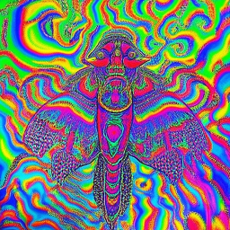
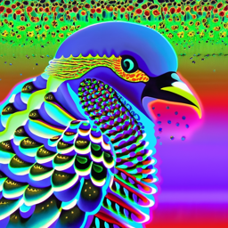
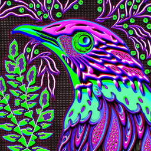
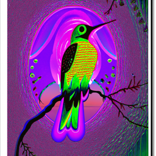
a greyscale lithograph of a redwood forest
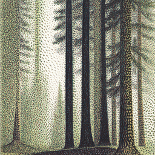
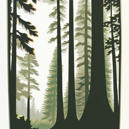
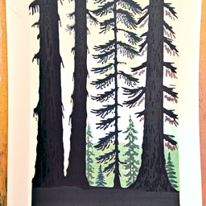
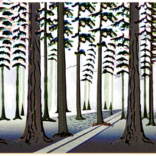
an oil painting of a wooden ship at sea
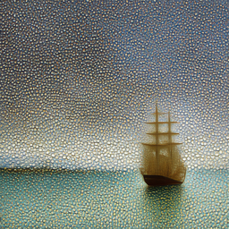
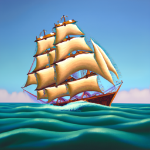
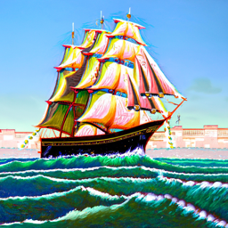
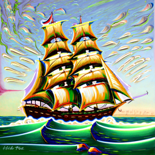
Part 1: Sampling Loops
Part 1 focused on implementing various diffusion sampling loops. All of
the loops follow the same general structure, but some loops are modified
to provide additional or specialized functionality for certain diffusion
techniques
Part 1.1: Implementing the Forward Process
Part 1.1 involved implementing the forward process that adds noise to
images. This is the process that the diffusion model is trained to
reverse.
Below is the code for the forward process.
def forward(im, t):
with torch.no_grad():
alpha_t = alphas_cumprod[t]
eps = torch.randn_like(im)
im_noisy = torch.sqrt(alpha_t) * im + torch.sqrt(1 - alpha_t) * eps
return im_noisy
Below is an image at various noise levels.

Berkeley Campanille
1.2 Classical Denoising
Part 1.2 involved applying a Gaussian blur as a classical denoising
method.
Below are the noisy images from part 1.1 after applying a Gaussian blur
for denoising.
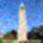
t = 250 (gaussian blur)
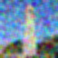
t = 500 (gaussian blur)

t = 750 (gaussian blur)
1.3 One-Step Denoising
Part 1.3 involved implementing one-step denoising which takes as input a
noisy image and returns a prediction of the original image based on the
U-Net prediciton of the noise (the U-Net is the pretrained DeepFloyd
network). There is no iteration in this process.
Below are examples of denoised images at different noise levels.
original
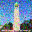
noisy (t = 250)
original
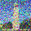
noisy (t = 500)
original
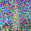
noisy (t = 750)
1.4 Iterative Denoising
Part 1.4 involved implementing iterative denoising which partially
denoises an image at each timestep until timestep 0 is reached (the
estimate of the original image)
Below is the iterative denoising implementation.
def iterative_denoise(im_noisy, i_start, prompt_embeds, timesteps, display=True):
image = im_noisy
with torch.no_grad():
step = 0
for i in range(i_start, len(timesteps) - 1):
t = timesteps[i]
prev_t = timesteps[i+1]
alpha_cumprod = alphas_cumprod[t]
alpha_cumprod_prev = alphas_cumprod[prev_t]
alpha = alpha_cumprod / alpha_cumprod_prev
beta = 1 - alpha
model_output = stage_1.unet(
image,
t,
encoder_hidden_states=prompt_embeds,
return_dict=False
)[0]
noise_est, predicted_variance = torch.split(model_output, image.shape[1], dim=1)
x_0 = (image - torch.sqrt(1 - alpha_cumprod) * noise_est) / torch.sqrt(alpha_cumprod)
x_t = image
pred_prev_image = ( ( ( torch.sqrt(alpha_cumprod_prev) * beta ) / ( 1 - alpha_cumprod ) ) * x_0
+ ( ( torch.sqrt(alpha) * ( 1 - alpha_cumprod_prev ) ) / ( 1 - alpha_cumprod ) ) * x_t )
pred_prev_image = add_variance(predicted_variance, t, pred_prev_image)
image = pred_prev_image
if display and step % 5 == 0:
media.show_images(image.permute(0, 2, 3, 1).cpu() / 2. + 0.5)
step += 1
clean = image.cpu().detach().numpy()
return clean
Below is an image at different stages (iterations) throughout the
iterative denoising process as well as the final denoised image. The
original, one-step denoised, and gaussian blurred image are shown as
well.
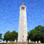
noisy (t = 90)
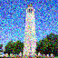
noisy (t = 240)
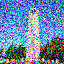
noisy (t = 390)
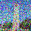
noisy (t = 540)
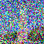
noisy (t = 690)
original
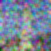
Gaussian blurred
1.5 Diffusion Model Sampling
Part 1.5 involved generating images from scratch by iteratively
denoising pure Gaussian noise.
Below are 5 example sampled (generated) images (prompt "a high quality
photo").
1.6 Classifier-Free Guidance (CFG)
Part 1.6 involved implementing classifier-free guidance (CFG) for the
iterative denoising process. CFG allows denoising to be conditioned on a
text prompt embedding to steer the denoising process.
Below are 5 example sampled (generated) images with CFG (prompt "a high
quality photo", conditional prompt "").
1.7 Image-to-image Translation
Part 1.7 involved implementing various image-to-image translations.
These are translations that take an image as input, modifiy it in some
way using diffusion, and return a new image.
Below are 3 images that are "edited" with diffusion by adding noise to
the original image with the forward process and then iteratively
denoising. For each image, the process is repeated for different noise
levels (i.e. different i_start values).
original
1.7.1 Editing Hand-Drawn and Web Images
Part 1.7.1 executes the same procedure as 1.7 but for web images and
hand-drawn images.
Below are the results for a web image.
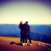
i_start = 1
Below are the results for 2 hand-drawn images.
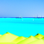
i_start = 10
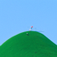
i_start = 20
1.7.2 Inpainting
Part 1.7.2 involved implementing inpainting with diffusion. A mask is
applied to the image to isolate a part of it, and noise is denoised on
that part of the image iteratively, forcing the rest of the image to
stay as the original image.
Below are 3 examples of inpainted images.
original

mask

hole to fill
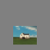
hole to fill
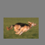
hole to fill
1.7.3 Text-Conditional Image-to-image Translation
Part 1.7.3 added text-prompt guiding to the image-to-image translation
process to steer the output.
Below are text-conditional edits and their prompts at different noise
levels.
"a rocket ship"
original
"a campfire"
"a frisbee"
1.8 Visual Anagrams
Part 1.8 involved implementing a procedure to generate visual anagrams
by an image from two different text prompts. The embeddings of each
prompt are used at each iteration of denoising, and the image is flipped
for the second embedding.
Below are examples of visual anagrams.
"an oil painting of an old man"
"an oil painting of people around a campfire"
"an oil painting a castle"
"an oil painting of a beach"
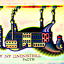
"a lithograph of an industrial factory"
"an oil painting of an old man"
1.9 Hybrid Images
Part 1.9 involved creating hybrid images by steering sampling with two
different text prompt embeddings and combining the noise estimates at
each step by taking a low pass filter of one noise estimate and a high
pass filter of the other.
Below are 3 examples of hybrid images.
"a lithograph of a skull"
"a lithograph waterfalls"
"a lithograph of a tiger"
"a lithograph of a landscape"
"an oil painting of a bird"
"an oil painting of a canyon"